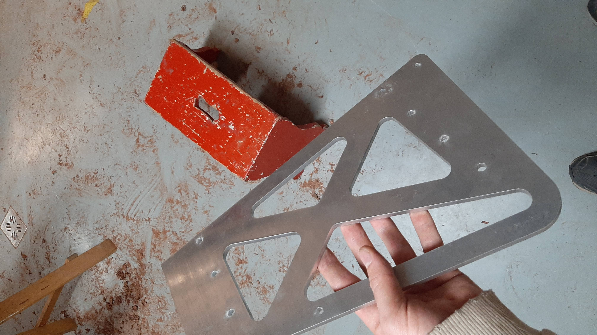
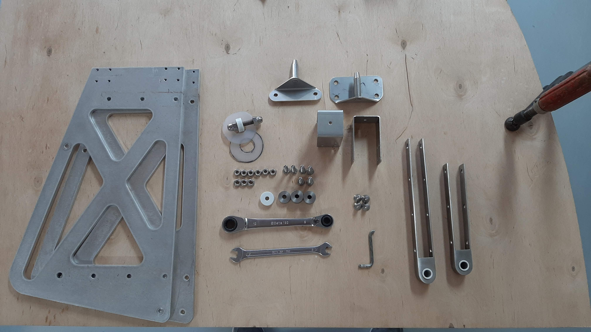
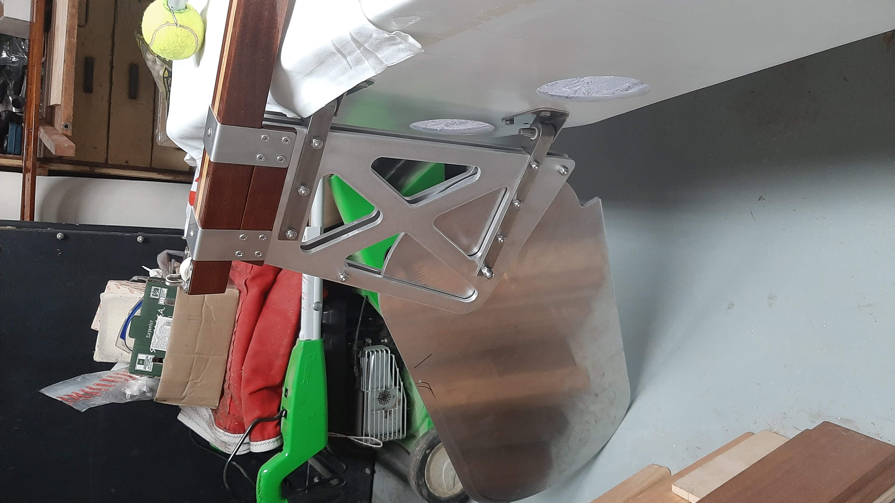
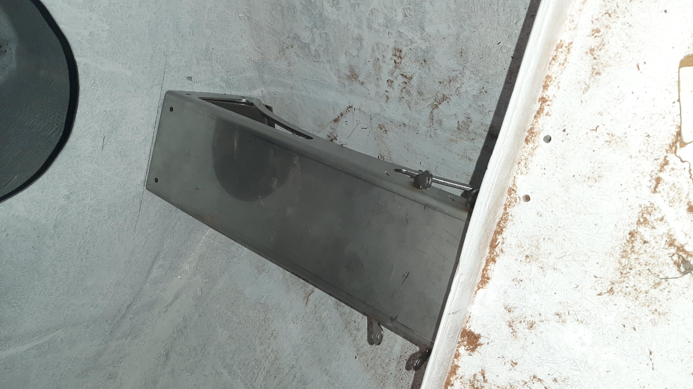

A felújítás során kellett fémet is megmunkálni, de ez kisebb részben volt kétkezi munka, nagyobb részben 3D tervezés, CNC marás és esztergálás.
Olyan alkatrészeket kellett csinálni, mint kormánylapát, kormánytok, kormányveret svert, és árbóctalp.

Olyan szerencsénk volt, hogy volt lehetőségünk CNC-géppel alkatrészeket gyártani, ami sokkal szebb és pontosabb eredményt adott. E nélkül a lehetőség nélkül lehetett volna még dekopír fűrésszel alumíniumot vágni ami azért nem annyira kellemes.

Természetesen nem passzolhat minden alkatrész elsőre, de egy kevés reszelgetás és faragás után egész egyszerűen összerakható volt a kormánytok.

És itt a végeredmény. Ennek a kormánynak egy ugyan ilyen szép elődje a Balaton fenekén pihen, valahol a déli part közelében már legalább 30 éve, egy szerencsétlen borulás és egy hiányzó biztosítószeg miatt.
Ezen a képen egy 3D tervezett alkatrész CAD modellje látható.Több alkatrészt is kellett tervezni, azok közül ez az egyik árbóctalp összetevő.

Rászorultunk, hogy új árbóctalpat készítsünk, mert a régi kompozitból készült, és sajnos beázott már, és nem is volt praktikus mert nem folyt át alatta a víz, ami egy ilyen kisméretű hajóban elég kritikus pont. A jobb felső sarokban látható az új légszekrény nyílása, amibe még nincs beépítve a légszekrény dugó.